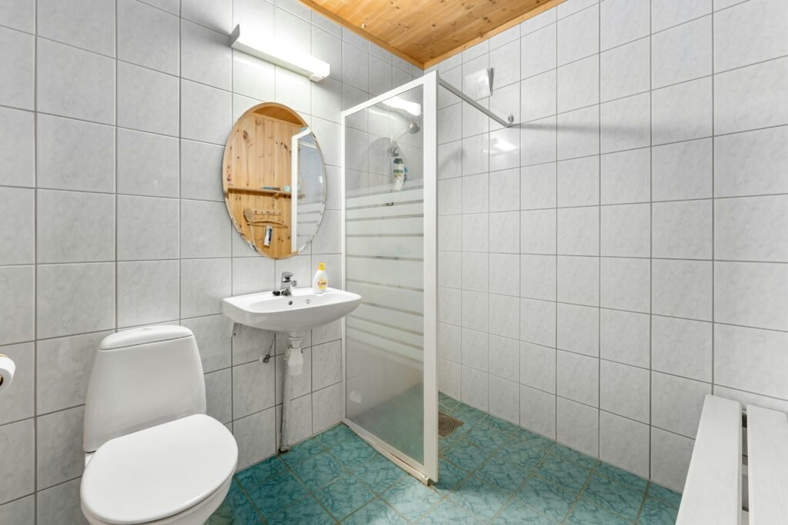
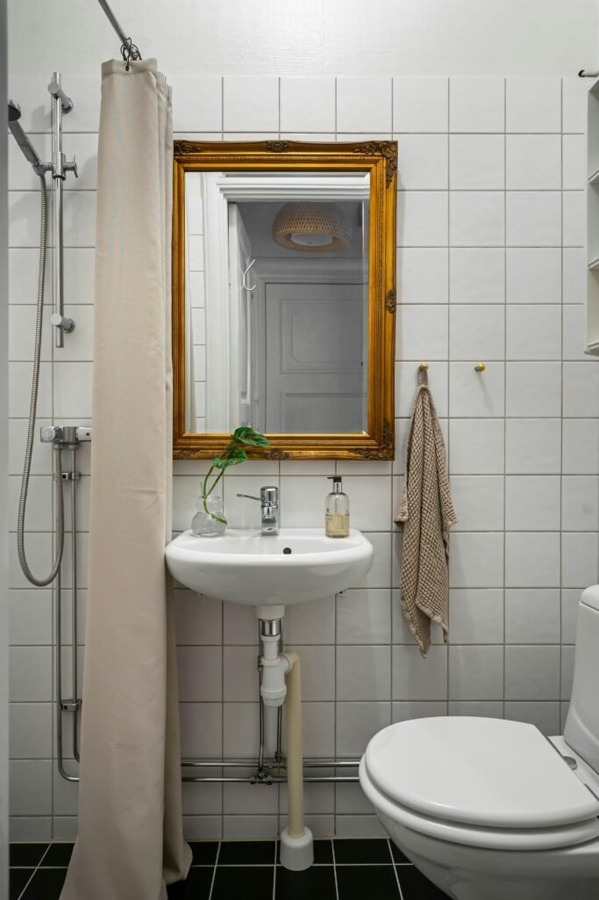
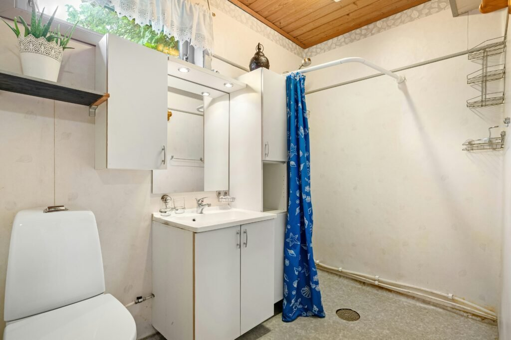
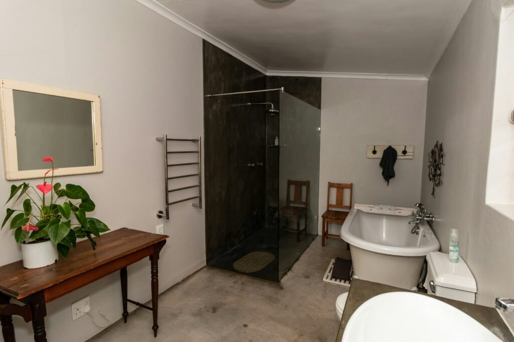
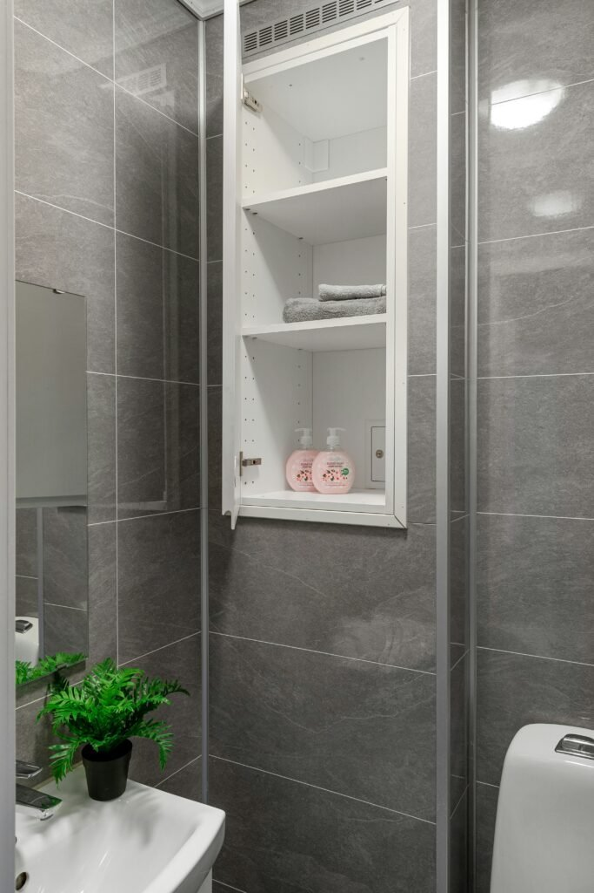
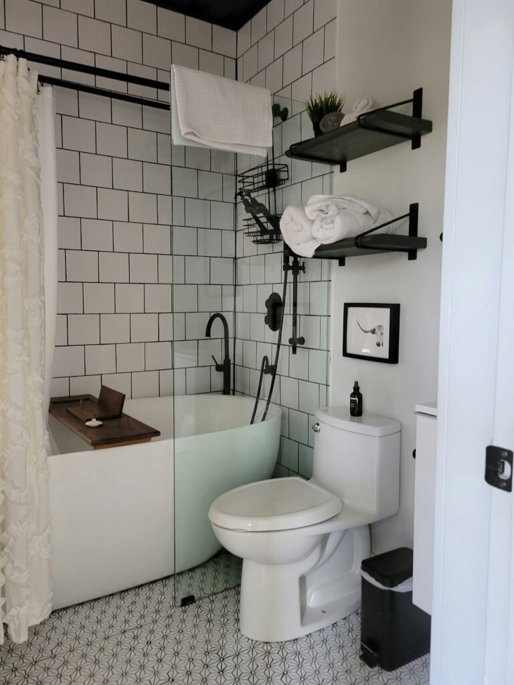
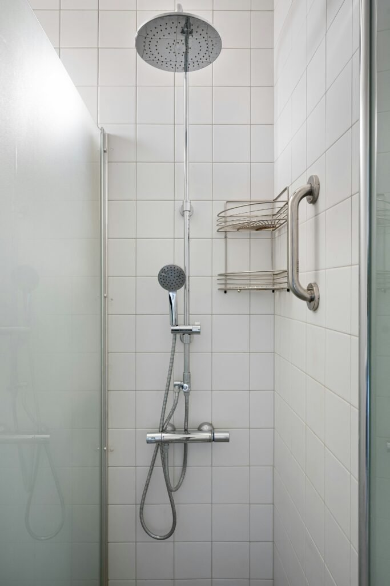
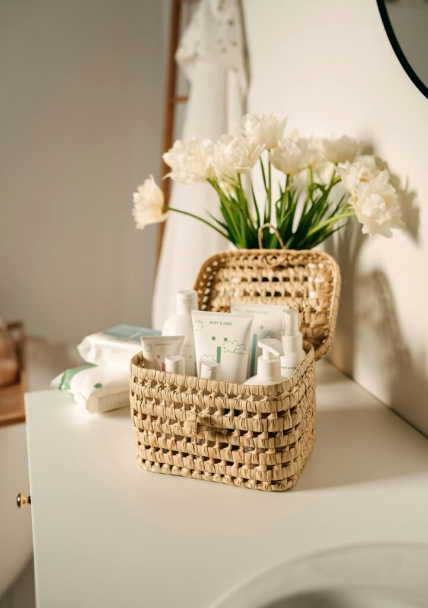
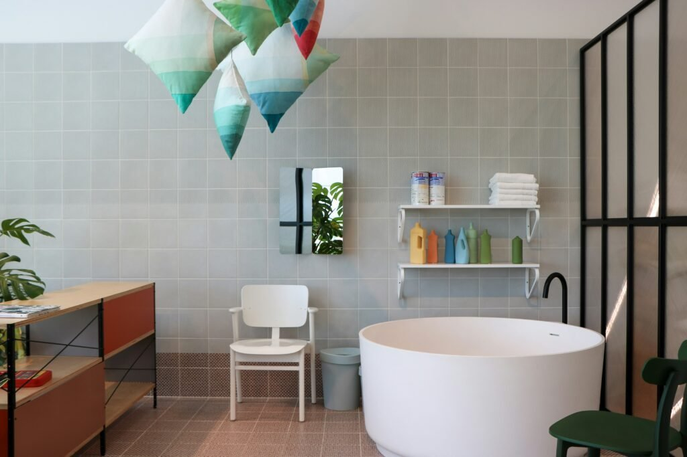
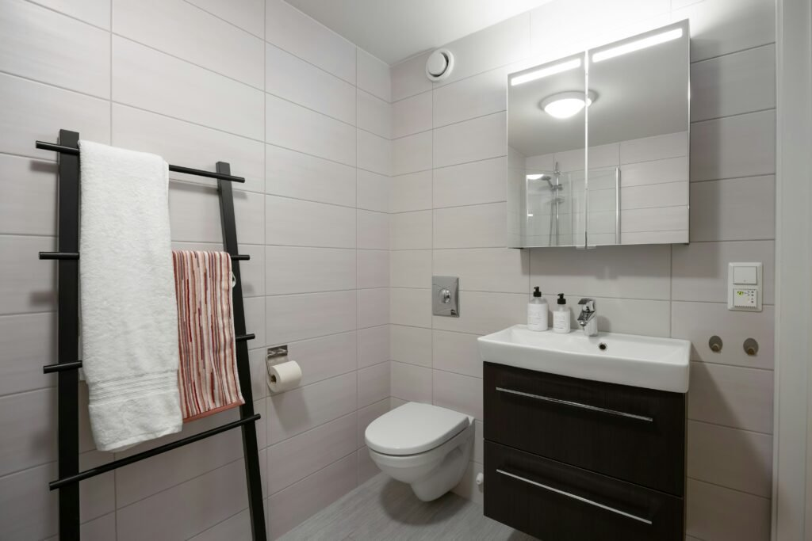

The bathroom is never quite big enough, is it?
Doesn't matter if you've got a primary suite or a half bath the size of a closet. Somehow the towels, the half-used bottles, and every skincare step you've ever tried all end up fighting for the same six inches of counter.
I've spent years rearranging bathrooms for clients and for myself, and here's what I keep coming back to: a tidy bathroom isn't really about owning less. It's about giving everything you own an actual place to live.
Once that clicks, even a tiny bathroom starts to feel calm instead of chaotic.
So here are ten ways to get there. Some take an afternoon, a couple take a renovation, and all of them are worth trying before you assume you simply need more square footage.

How to Plan It Like You're Starting From Scratch
Whenever I walk into a new bathroom project, I don't reach for baskets first. I map the space.
- Sort by how often you reach for it. Daily use and once-a-month use don't belong on the same shelf.
- Find the dead zones first. Corners, the space above the toilet, the back of the door, most bathrooms are wasting at least one of these.
- Pick pieces that pull double duty. A mirror that's also a cabinet beats buying two separate things every time.
- Don't treat style and function as a trade-off. They're not actually competing, you just have to shop like they aren't.
Do this part first and you'll stop buying "cute" bins that turn out to be the wrong size for your actual space.

A Few Habits Worth Breaking First
Before the fun list, a quick gut check, because I've made every one of these mistakes myself.
- Treating the counter as default storage. If it's not something you're actively using right now, it shouldn't be camping out on the counter.
- Ignoring the walls entirely. Vertical space is free real estate, and most bathrooms are barely using any of it.
- Keeping everything at eye level. The bulky stuff you touch once a month belongs up high or tucked away, not front and center.
- Grabbing whatever container's closest. Function matters, sure, but a shelf of mismatched tubs still reads as a dollar-store aisle, not storage.
Fix these four and your existing setup will already look more intentional, before you've bought a single new thing.
Why Bathroom Storage Is About More Than Finding Space
Here's the thing nobody tells you: two bathrooms can be the exact same size and feel completely different, purely based on how the storage is used. It's never really about square footage.
Good storage does three things at once. It clears your counters, it gets you dressed faster because you're not hunting for anything, and it makes the whole room feel more like a place you'd actually want to spend time in.
The goal was never to own fewer products. It's to store the ones you have on purpose instead of by accident, and that distinction changes everything about how a small bathroom reads.

1. Fix the Vanity Cabinet Once and For All
The cabinet under your sink has the most potential and, let's be honest, the worst track record. Things go in and you never see them again.
The fix is structure, not more stuff. Stackable bins or a tiered rack split the space into zones, cleaning supplies on one level, backstock on another, so you're not kneeling and digging every time you need something.
Once it's sorted, a closed cabinet door is actually a feature. Everything stays exactly where you put it, and the vanity top stays clear because there's finally somewhere for the overflow to go.

2. Add a Wall Hook (or Three) Where You'd Least Expect It
Hooks are the most underrated storage idea on this whole list, mostly because they feel too simple to count. They absolutely count.
A single hook by the shower catches the towel you actually use that day, instead of it ending up balled up on the floor. Add a second for a robe and you've solved the morning scramble entirely.
No drilling required if you go the adhesive route, which makes this the easiest idea here to try in a rental before committing to anything more permanent.

3. Build In a Niche for the Everyday Essentials
If you're ever mid-renovation, this is the idea worth requesting. A recessed niche built into the wall gives you real shelf depth without a single inch of floor space lost.
I like leaving one shelf for towels and the lowest one for whatever you reach for first thing in the morning. It keeps the niche from turning into a junk drawer with a door.
Because it sits flush with the wall, there's no cabinet door swinging into your elbow and no corner catching dust. It just quietly does its job.

4. Put That Blank Wall to Work
Every bathroom has one wall that's just … there. Above the toilet, beside the tub, next to the shower door, it's prime storage real estate most people never use.
A pair of black floating shelves instantly puts that wall to work. I like keeping the bottom shelf purely functional, rolled towels, extra tissue, and letting the top shelf carry a plant or a small framed print so it doesn't feel purely utilitarian.
Two shelves is usually the sweet spot. Stack a third in and the whole thing starts to feel heavy on a wall that's supposed to stay secondary.

5. Add a Caddy That Keeps the Shower Edited
Shower clutter is its own category of chaos, five half-empty bottles balanced on a ledge, none of them staying put. A proper hanging caddy solves it in one step.
I prefer a slim wire one that hooks over the shower arm or mounts beside the grab bar, since it keeps everything off the shower floor and easy to wipe around.
Edit down to what you actually use. A caddy with eight bottles crammed in isn't storage, it's just clutter that got relocated.

6. Use Baskets to Make Clutter Look Intentional
Baskets are the fastest fix on this list. Group loose bottles and tubes into one woven basket and the whole counter suddenly reads as styled instead of scattered.
I like a basket with a lid or flap for anything you'd rather not have on display, and an open one for the pretty bottles you don't mind showing off.
A small stem of flowers or greenery tucked beside the basket keeps the whole grouping from feeling purely functional. It starts to look like a vignette instead of a to-do list.

7. Try a Ladder Shelf You Can Move on a Whim
A leaning ladder shelf gives you storage without a single screw in the wall, which makes it the easiest idea on this list to try and undo if it's not working.
I like wood ones for the warmth they bring against plain tile. Use the rungs for hand towels and the shelves for baskets or folded washcloths.
Because nothing's mounted, you can shift it two feet to the left the next time you rearrange, or move it to a totally different room when the mood strikes.
8. Mount Floating Shelves That Don't Compete With the Room
Floating shelves are the easiest way to add storage without adding visual weight. There's no bulky cabinet, just a clean line on the wall.
Mount a pair above the tub or beside the sink and use them for rolled towels and anything with a nice bottle, since open shelving puts everything on display.
A little color is welcome here. A row of products in different hues actually reads as styling rather than clutter once it's up on a shelf instead of crowding the counter.

9. Swap In a Mirrored Cabinet That Hides the Clutter
If I had to pick one upgrade that changes a bathroom the most, it's this one. Swap a flat mirror for a mirrored cabinet and you get the same reflection plus a spot to stash everything that was cluttering your counter.
I'm a big fan of the kind with built-in lighting around the edge. It does double duty as a vanity light, so you're not relying on one overhead bulb to get ready in the morning.
Keep the inside loosely zoned: medicine on one shelf, skincare on another, and the stuff you grab daily at eye level so you're not digging every time.

10. Roll In a Cart for the Stuff You Reach for Daily
Rolling carts get all the kitchen attention, but a slim three-tier one slots perfectly between a tub and a toilet, or right beside the vanity.
I like using mine for spare towels on the bottom, bath products in the middle, and a candle or small plant up top so it still looks styled instead of purely functional.
Look for one with locking wheels. There's nothing graceful about chasing your toiletries across the tile because the cart drifted.
Bonus: Let Storage Double as Decor
Here's a mindset shift that changed how I shop for bathroom storage entirely: the containers themselves are decor, not just a way to hide mess.
Matching bottles, labeled jars, and a consistent color story make a bathroom look finished even when nothing about the layout has changed. A few open shelves, styled well, can carry the whole room.
Stick to a tight palette. White, wood tones, and one neutral accent color goes a long way toward that calm, spa-like feeling everyone's after.
Keeping It Organized Once the Hard Part's Done
Setting up the system is the easy half. Staying organized is the part that actually takes effort, because clutter always finds its way back in.
- A five-minute reset once a week. Put stray things back where they actually belong before they start piling up.
- A real declutter once a month. Toss whatever's expired, and anything you haven't touched since the last round.
- Stay loyal to the system you built. Every random bin you add in "just this once" is a crack the clutter will eventually find.
Organization isn't a weekend project you finish. It's closer to a habit you keep up, and once it sticks, that calm feeling carries into the rest of your morning.
Start With One Idea, Not All Ten
The best bathroom storage ideas aren't the most expensive ones. They're the ones that actually match how you use the room, whether that's three products total or a shelf's worth of skincare you're not ready to part with.
Start with one idea from this list, a basket here, a floating shelf there, and build from there instead of trying to overhaul the whole room in a weekend.
Give it a few weeks, and don't be surprised if the bathroom quietly becomes your actual favorite room in the whole house to get ready in.